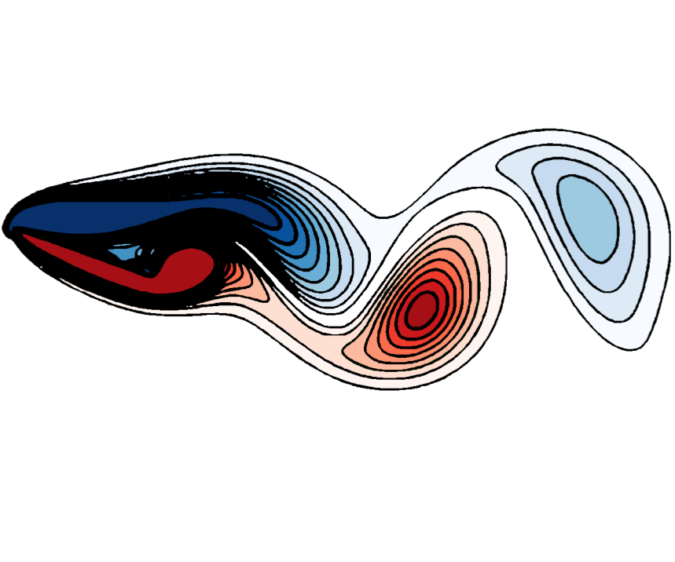

S. T. M. Dawson, M. S. Hemati, D. Floryan, and C. W. Rowley, AIAA Paper 2016-2069
doi: 10.2514/6.2016-2069
Periodically pitching an airfoil can increase its lift compared to a fixed airfoil.
In this work, we study a sinusoidally pitching, two-dimensional flat plate airfoil at a Reynolds number of 100, across a range of pitching amplitudes, frequencies, mean angles of attack, and pitch axis locations. We report on the lift, drag, and wake structures present in different regions of parameter space. We examine the average and spectral properties of the forces on the airfoil, and use dynamic mode decomposition to examine the structures and frequency content of the wake. We give focus to a number of regions in parameter space where interesting behavior is observed. In particular, we find that in the regime where the flow on the upper surface of the airfoil is separated, but the steady wake is stable, pitching at a specific frequency excites a vortex shedding mode in the wake, leading to substantial increase in the lift and drag forces. This phenomena is insensitive to pitch-axis location and amplitude. At higher angles of attack where the wake for a steady airfoil exhibits periodic vortex shedding, we find that, in addition to this mean lift maxima, the interaction between the natural and forced modes gives rise to more complex behavior.